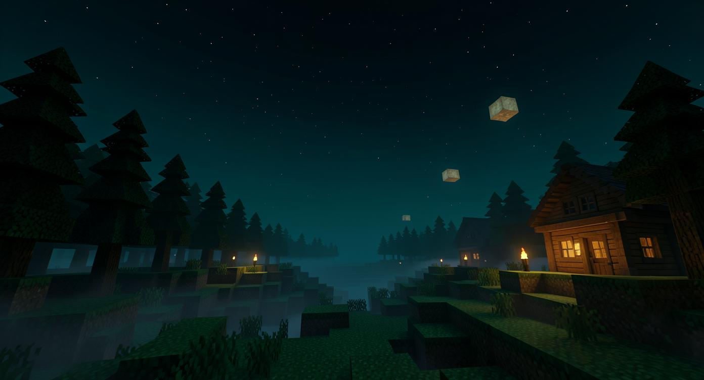

FRAME-RATE FIRST
Rendering and entity optimisations are on from the first launch, so older laptops and high-refresh monitors both gain frames.

A fast, open-source Minecraft client for every modern version.
Latest installer, straight from the release — no redirects. Windows, macOS, Linux
No launcher bloat, no background services. Just a client that gets out of the way.
Rendering and entity optimisations are on from the first launch, so older laptops and high-refresh monitors both gain frames.
Drag keystrokes, CPS, ping, armour and potions anywhere on screen, then save separate layouts per profile.
Drop Fabric mods into the client folder or install them from inside the launcher. Conflicts are flagged before launch.
Tuned defaults keep memory use low, so streaming or a second monitor doesn't cost you frames.
Jump between 1.8.9 for PvP and the newest release without separate installs or duplicated worlds.
Every line is on GitHub. Read it, build it yourself, or open an issue when something breaks.
Press download. The button resolves the newest release and starts the installer directly.
Pick a folder and let it finish. Builds are unsigned, so Windows asks for “More info → Run anyway”.
Use your Microsoft account, choose a version and launch. Your existing worlds are already there.
Yes. It is free and open source, and there is nothing to buy inside the client.
Modern releases plus 1.8.9 for PvP. Switch versions from the launcher; each keeps its own mods and settings.
The download button asks GitHub for the newest published release and links straight to that installer file. Nothing is re-hosted.
No. The client ships with its own runtime and picks the right one per version.
The build isn't code-signed yet, so Windows SmartScreen and macOS Gatekeeper ask for confirmation the first time. The full source is on GitHub if you'd rather build it.
Free, open source, and one click from the latest build.
DOWNLOAD Windows, macOS, Linux